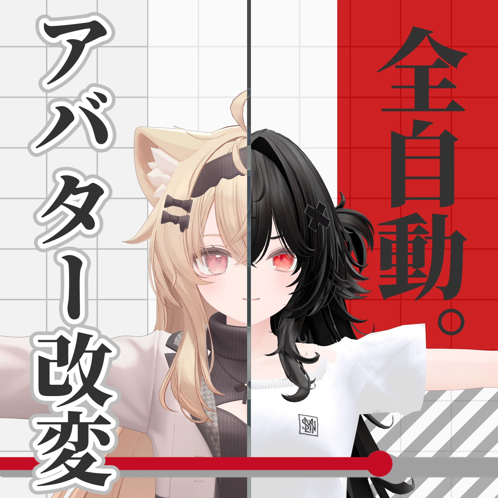

SanText
「アバター改変を記録して、いつでも再生」
アバターをいじった手順を自動でメモ。ワンクリックで再生・巻き戻しができる、改変作業を圧倒的に楽にするUnity拡張です。

概要
SanTextは、Unityエディタ上で行ったアバター改変のプロセスを自動で「記録」し、後から「再生」や「巻き戻し」を行えるツールです。
「手順を忘れてしまった」「特定の変更だけ元に戻したい」「同じ設定を別のアバターにも適用したい」といったアバター改変の様々な課題を解決します。
無駄に詳細なバックアップとしても機能し、試行錯誤を強力に支援します。
主な機能
- 自動で記録: 記録開始ボタンを押していつも通り作業するだけで、各種プロパティ、マテリアル、コンポーネントの追加/削除、Transformなどを操作の流れに沿って自動で記録します。
- 順再生（もう一度）: 記録した手順を同じアバター、あるいは別のアバターにワンクリックで再適用。改変レシピの使い回しに最適です。
- 巻き戻し（やり直し）: 気になる手順や特定の変更だけを選んでピンポイントで元に戻せます。「この一部の設定だけやっぱり無しで」が簡単に実現します。
- レシピの共有・配布: 記録データは軽量なJSONファイルで保存。別PCや別のプロジェクトに持っていってもGUIDやパスから自動的に参照を再解決します。
- タイムラプス機能: 記録した改変手順をタイムラプスとして撮影・動画作成が可能です（※前提アセットとしてGestureManagerが必要です）。
対応ツール
主要なアバター改変ツールの操作も、ツール名・項目名付きの分かりやすい手順として自動認識し記録します。
- VRChat SDK (Avatar Dynamics): PhysBone, Constraints, Avatar Descriptor (LipSync, Viseme), Head Chop 等
- lilToon: マテリアル設定、グラデーション、シェーダー設定、Lite/Multi変換 等
- Modular Avatar: Object Toggle, Shape Changer, Material Setter, Parameters, Menu Item, Merge Armature 等
- Avatar Optimizer (AAO): Merge PhysBone, Merge Skinned Mesh, Freeze/Remove Mesh BlendShape 等
- Avatar Compressor: LAC Texture Compressor
- その他汎用操作: GameObjectの追加/削除/移動、コンポーネント追加/削除、マテリアル割り当て、リスト要素増減 等
使い方
1
「Tools > Mame2an > SanText」からウィンドウを開きます。
2
「記録開始」を押し、いつも通りアバターを改変したら「記録停止」を押します。
3
一覧から記録を開いて、順再生や巻き戻しを行って改変を適用します。
動作環境
- ✔ Unity 2022.3 系（VRChat SDK3 / Avatars 環境推奨）
- ✔ VRChat SDK - Avatars 3.10.3 以上推奨
注意事項
- 本ツールはエディタ拡張です。アバターやアセットそのものは含まれません。
- 改変内容によっては、再生・巻き戻しに対応しない特殊な操作があります（テクスチャの焼き込み等）。
- 別アバターへの再生は、アバターの構造差により結果が異なる場合があります。